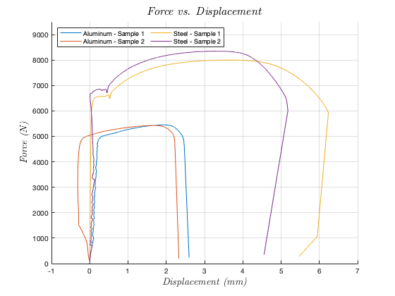

Contents
clear; close all;
Experimental Data
aluminum.LengthInitial = [25.24 25.57];
aluminum.LengthFinal = [28.64 28.94];
aluminum.WidthInitial = [6.35 6.36];
aluminum.WidthFinal = [5.63 5.8];
aluminum.ThicknessIntial = [2.55 2.53];
aluminum.ThicknessFinal = [2.23 2.23];
steel.LengthInitial = [25.57 25.82];
steel.LengthFinal = [32.68 31.89];
steel.WidthInitial = [6.48 6.45];
steel.WidthFinal = [4.31 4.53];
steel.ThicknessIntial = [2.5 2.55];
steel.ThicknessFinal = [1.64 1.17];
Force-Displacement Curve
aluminum1Force = xlsread('Tensile Test Results.xlsx', 'ExperimentalData', 'C12:C684');
aluminum1Displacement = xlsread('Tensile Test Results.xlsx', 'ExperimentalData', ...
'F12:F684');
figure(1);
hold on;
grid on;
ylim([0 9500]);
plot(aluminum1Displacement, aluminum1Force, 'DisplayName', 'Aluminum - Sample 1');
aluminum2Force = xlsread('Tensile Test Results.xlsx', 'ExperimentalData', 'M12:M601');
aluminum2Displacement = xlsread('Tensile Test Results.xlsx', 'ExperimentalData', ...
'P12:P684');
plot(aluminum2Displacement, aluminum2Force, 'DisplayName', 'Aluminum - Sample 2');
steel1Force = xlsread('Tensile Test Results.xlsx', 'ExperimentalData', 'W12:W1217');
steel1Displacement = xlsread('Tensile Test Results.xlsx', 'ExperimentalData', ...
'Z12:Z1217');
steel1DisplacementL = steel1Displacement(1:270);
steel1ForceL = steel1Force(1:270);
plot(steel1Displacement, steel1Force, 'DisplayName', 'Steel - Sample 1');
steel2Force = xlsread('Tensile Test Results.xlsx', 'ExperimentalData', 'AG12:AG1253');
steel2Displacement = xlsread('Tensile Test Results.xlsx', 'ExperimentalData', ...
'AJ12:AJ1253');
steel2DisplacementL = steel2Displacement(1:270);
steel2ForceL = steel2Force(1:270);
plot(steel2Displacement, steel2Force, 'DisplayName', 'Steel - Sample 2');
xlabel('\emph {Displacement (mm)}', ...
'fontsize', 14, 'Interpreter', 'latex');
ylabel('\emph {Force (N)}', 'fontsize', 14, 'Interpreter', 'latex');
title('\emph {Force vs. Displacement}', 'fontsize', 16, ...
'Interpreter', 'latex');
legend('location', 'northwest', 'NumColumns', 2);

Calculations
aluminum.InitialArea = aluminum.WidthInitial .* aluminum.ThicknessIntial;
aluminum.Stress1 = (aluminum1Force ./ aluminum.InitialArea(1))';
aluminum.Stress2 = (aluminum2Force ./ aluminum.InitialArea(2))';
aluminum.Strain1 = (aluminum1Displacement ./ aluminum.LengthInitial(1))';
aluminum.Strain2 = (aluminum2Displacement ./ aluminum.LengthInitial(2))';
steel.InitialArea = steel.WidthInitial .* steel.ThicknessIntial;
steel.Stress1 = (steel1Force ./ steel.InitialArea(1))';
steel.Stress2 = (steel2Force ./ steel.InitialArea(2))';
steel.Strain1 = (steel1Displacement ./ steel.LengthInitial(1))';
steel.Strain2 = (steel2Displacement ./ steel.LengthInitial(2))';
Stress-Strain Curve
figure(2);
hold on;
grid on;
plot(aluminum.Strain1, aluminum.Stress1, 'DisplayName', 'Aluminum - Sample 1');
plot(aluminum.Strain2, aluminum.Stress2, 'DisplayName', 'Aluminum - Sample 2');
plot(steel.Strain1, steel.Stress1, 'DisplayName', 'Steel - Sample 1');
plot(steel.Strain2, steel.Stress2, 'DisplayName', 'Steel - Sample 2');
xlabel('\emph {Strain ($${\frac{mm}{mm})}$$}', ...
'fontsize', 14, 'Interpreter', 'latex');
ylabel('\emph {Stress (MPa)}', 'fontsize', 14, 'Interpreter', 'latex');
title('\emph {Stress vs. Strain}', 'fontsize', 16, ...
'Interpreter', 'latex');
legend('location', 'northwest', 'NumColumns', 2);
figure(3);
hold on;
grid on;
plot(aluminum.Strain1(1:220), aluminum.Stress1(1:220), 'DisplayName', 'Aluminum - Sample 1');
plot(aluminum.Strain2(1:175), aluminum.Stress2(1:175), 'DisplayName', 'Aluminum - Sample 2');
plot(steel.Strain1(1:250), steel.Stress1(1:250), 'DisplayName', 'Steel - Sample 1');
plot(steel.Strain2(1:250), steel.Stress2(1:250), 'DisplayName', 'Steel - Sample 2');
xlabel('\emph {Strain ($${\frac{mm}{mm})}$$}', ...
'fontsize', 14, 'Interpreter', 'latex');
ylabel('\emph {Stress (MPa)}', 'fontsize', 14, 'Interpreter', 'latex');
title('\emph {Stress vs. Strain in Elastic Regime}', 'fontsize', 16, ...
'Interpreter', 'latex');
legend('location', 'northwest', 'NumColumns', 2);